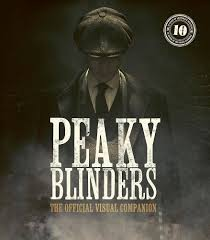
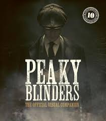
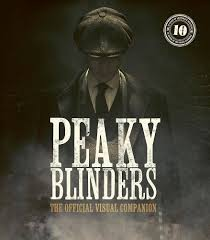
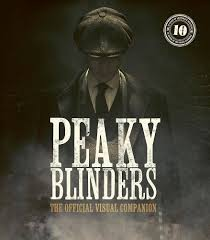

The Peaky Blinders is the most powerful gang in England, and one of the most powerful gangs in the world. Initially founded in Birmingham after WWI, through Thomas Shelby's leadership, they began as an illegal bookmaking operation and eventually branched out to fixing races, bootlegging and car manufacturing. They were established as the Shelby Company Limited in 1920. However, after the Wall Street Crash they began switching bootlegging to smuggling opium in order to raise enough capital to keep the company from going bankrupt. They have various legitimate businesses such as a distillery, automotive manufacturing factories, racetracks, etc.
Their rise to power was aided through Thomas Shelby's brains and initiative , and his transactional relationship with Winston Churchill , as Thomas kept doing favors for him and the Crown such as assassinations, arms deals , and gathering intelligence on radical political groups in England and abroad. Winston Churchill eventually repaid the favor by granting him an Empire export license to sell manufactured car parts to power when he asked Churchill for an OBE, and ran for MP of Birmingham, eventually winning by a landslide, due to his considerable influence in the city.
Blinders is a crime drama centred on a family of mixed Irish Traveller and Ro mani origins based in Birmingham, England, starting in 1919, several months afte r the end of the First World War. It centres on the Peaky Blinders street gang and their ambitious, cunning crime boss Tommy Shelby. The gang comes to the attention o Major Chester Campbell, a detective chief inspector in the Royal Irish Constabulary sent by Winston Churchill from Belfast, where he had been sent to clean up the city o f the Irish Republican Army flying columns, the Communist Party of Great Britain, stre et gangs, and common criminals.[1][2] Winston Churchill (played by Andy Nyman in series 1 and Richard McCabe in series 2) charges him with suppressing disorder and uprising in Birmi ngham and recovering a stolen cache of arms and ammunition meant to be shipped to Libya.[3 ][4] The first series concludes on 3 December 1919—"Black Star Day", the event where the Pe aky Blinders plan to take over Billy Kimber's betting pitches at the Worcester Races.